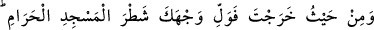
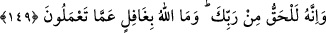
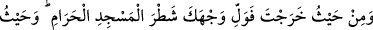
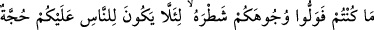
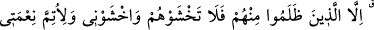
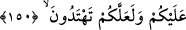

yönü vardır. Bu kıbleler, birbirinden farklıdır. Siz ey mü’minler iki cihân saâdetine
erişmek için Allah’ın emrine uyup kıble konusu da dâhil, hayırlı işler işlemeye gayret
gösterin; birbirinizle hayırda yarışın.
Her bir ümmetin ısrarla yöneldiği bir kıblesi vardır. Sen her ne kadar onlara kıblenin
Kâbe olduğu hakkında delîl getirirsen de, onlar kendi kıblelerini bırakıp bunu kabûl
etmezler. O halde siz ey müslümanlar, Allah’dan geldiği kesin olan emirleri tutmaya ve
hayırlı ameller yapmaya koşun. Doğru olanı arkalarına atıp, hevâlarına tâbi olan,
kendini beğenmiş kimselerin peşi sıra gitmeyin! Çünkü onlar, şer ve fesâdda
yarışmaktadırlar. Çünkü Hakk’ın dışındaki her şey dalâlettir, sapıklıktır.
Bu âyetin mânâsı hakkında ehl-i hakîkat şöyle demiştir: “Herkes bizi bırakıp başka
şeylerle meşgul oldular. Başka şeylere yöneldiler. Siz ey bizi bilenler! Başkalarını
bırakın, Bize yönelin. Çünkü dönüşünüz Bize’dir. Siz ve düşmanlarınız nerede olursanız
olun, Allah sizi mahşerde bir araya getirecek, doğru yolda olanınızla yanlış yolda
olanınızı ayıracak ve buna göre size karşılık verecektir. ”
Bu durum, itâatkâr kullar için bir müjde, isyânkâr kullar için bir tehdiddir. Şüphesiz
Allah, sizi öldürmeye de tekrar diriltmeye de, mahşer yerinde toplamaya da kâdirdir.
149. Nereden yola çıkarsan çık (namazda) yüzünü Mescid-i Haram tarafına
çevir. Bu emir Rabbinden sana gelen gerçektir. (Biliniz ki) Allah yaptıklarınızdan
habersiz değildir.
Herhangi bir yere gitmek üzere sefere çıkınca, namaz kılarken yüzünü yine Mescid-i
Haram’a doğru çevir; çünkü seferde olmak, namaz kılarken Kâbe’ye yönelmenin
hükmünü değiştirmez. Kıbleye dönme konusunda mukîm olmakla, yolcu olmak arasında
fark yoktur. Kıblenin Kâbe’ye çevrilmesi, Rabbinden gelen ve hikmete muvafık bir
emirdir. Allah yaptıklarınızdan gâfil değildir. Bilakis hepsini bilmektedir. Bunlarla sizi
en güzel şekilde mükâfâtlandıracaktır. Bu, mü’minler için bir müjdedir.